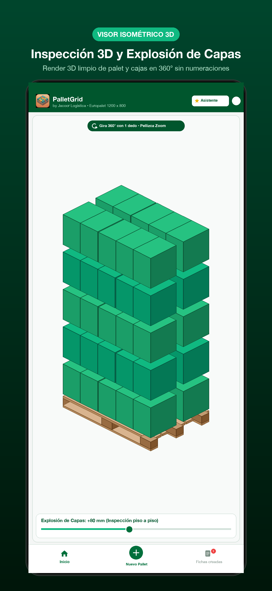
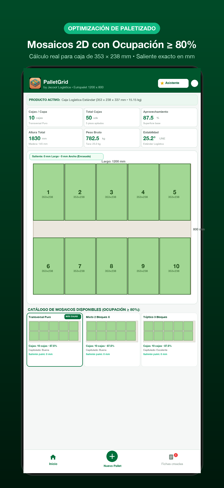
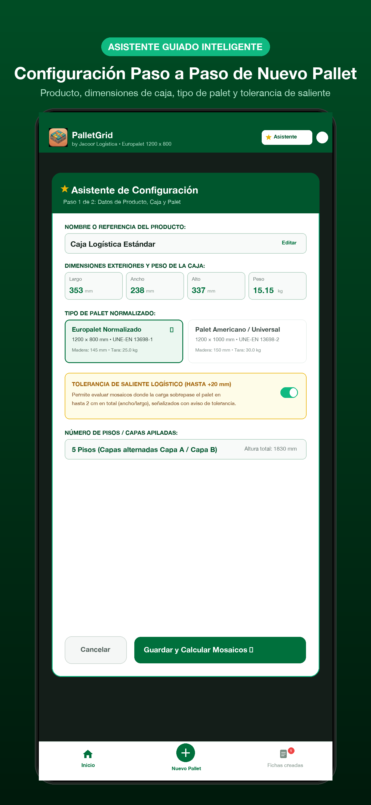
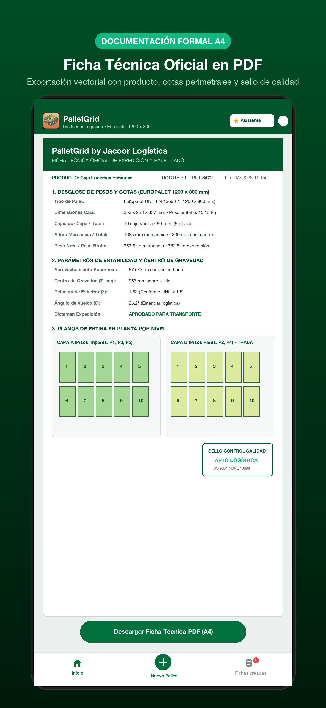

Calcula en segundos mosaicos óptimos con ocupación ≥ 80%, simula el cruce de juntas con Capa B capitulada en 3D interactivo y exporta fichas técnicas oficiales A4 conformes a la norma UNE-EN 13698.

Cada función de PalletGrid responde a una necesidad crítica de los ingenieros de packaging, jefes de almacén y responsables de operaciones.
Configura nuevos paletizados en 2 sencillos pasos introduciendo el producto, cotas exteriores de la caja, peso y tipo de tarima normalizada.
El motor geométrico descarta automáticamente patrones ineficientes y ofrece solo variantes de alta densidad: transversal, longitudinal, mixtos y molinillos.
Genera la rotación o espejo de cajas entre pisos para cruzar las juntas verticales, evitando que la carga se abra en columnas durante el transporte en camión.
Permite evaluar salientes perimetrales de hasta 20 mm (+2 cm en total), indicando la cota exacta en milímetros para evitar rechazos en muelle.
Calcula con precisión el Centro de Gravedad Z, la Relación de Esbeltez (λ ≤ 1.8) y el Ángulo Crítico de Vuelco (θ) con dictamen de homologación.
Inspecciona el palet y las cajas en 360 grados con renderizado fotorrealista limpio. Separa los pisos en altura para auditar cada nivel.
Accede desde el dock simétrico a todo tu historial de expediciones guardadas. Busca rápidamente por producto, código o fecha.
Exporta fichas técnicas formales con cotas en alzado, esquemas en planta y sello de calidad listas para AirPrint, AirDrop o Archivos.
Disponible en Español, Inglés, Francés, Alemán, Italiano y Portugués. Funciona sin conexión a internet y no recopila ningún dato.
Diseñada con estándares de interfaz iOS Human Interface Guidelines para máxima productividad táctil en planta y oficina.




UNE-EN 13698-1 • ISO 445
Medidas de 1200 × 800 mm, madera de 145 mm de altura y tara nominal de 25.0 kg. El estándar indiscutible de la distribución y logística europea.
UNE-EN 13698-2 • ISO 6780
Medidas de 1200 × 1000 mm, madera de 150 mm de altura y tara nominal de 30.0 kg. Empleado internacionalmente para gran consumo, bebidas y químicos.
Lleva en tu iPhone o iPad el cálculo de cubicaje más avanzado, riguroso y respetuoso con tu privacidad.
Descargar PalletGrid en App Store